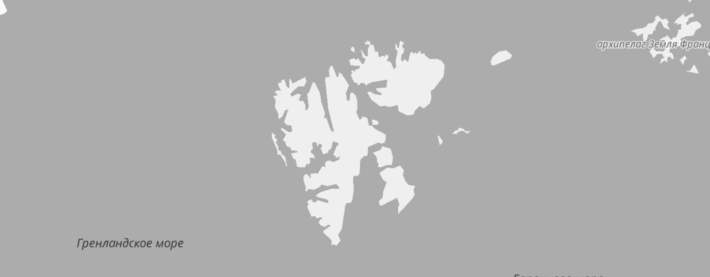

<!DOCTYPE html><html lang="en"><head><meta charset="UTF-8"><meta name="viewport" content="width=device-width,initial-scale=1"><meta http-equiv="X-UA-Compatible" content="ie=edge"><meta name="author" content="Pavel Ovechkin"><meta name="description" content="Project work 2"><link rel="stylesheet" type="text/css" href="../styles/index.css"><title>Russia</title></head></html><body class="body"><div class="page"><header class="header"><div class="header__lang-block"><a class="header__lang" href="../index.html">Ru</a> <a class="header__lang header__lang_active" href="#">En</a></div></header><main class="content"><section class="lead"><div class="lead__container"><h1 class="lead__title">Traveling in Russia</h1><h2 class="lead__subtitle">The real country is not in the news, but here.</h2></div><div class="lead__image"></div><p class="lead__caption">your shelf is top</p></section><section class="intro"><h2 class="intro__title">What didn’t we see there?</h2><p class="intro__subtitle">Why travel around your home</p><div class="intro__content-row"><p class="intro__content-p">According to WCIOM polls, 95% of Russians dream of going somewhere, but only 36% plan a vacation in their home country. Like, what are we here at home, have not you seen? In fact, Russia is a whole universe with the gentle sea of ​​the south, the dense forests of the Sayan Mountains and the harsh ice of the plateau Putorana. And you can see all these beauties without millions on account, passport and hours of flights. Like Vera, for example Bashmakova - a brave young mother who took in an armful of three children, put them in her "Lada" and drove 20 thousand kilometers in their native country. We have selected and described some interesting places worthy of your vacation.</p><ul class="intro__content-ul"><li class="intro__text-li"><span class="span__text">Text author:</span>&nbsp;Ivan Pupkin</li><li class="intro__text-li"><span class="span__text">Date:</span>&nbsp;21.05.2013</li></ul></div><ul class="intro__text"><li class="intro__text-li"><span class="span__text">Time zones</span>&nbsp;11</li><li class="intro__text-li"><span class="span__text">UNESCO World Heritage Sites</span>&nbsp;12</li><li class="intro__text-li"><span class="span__text">UNESCO World Heritage Sites</span>&nbsp;16</li><li class="intro__text-li"><span class="span__text">Nature reserves</span>&nbsp;105</li><li class="intro__text-li"><span class="span__text">Airports</span>&nbsp;241</li></ul></section><section class="photo-grid">           </section><section class="places"><div class="places__place"><div class="places__left-block"><p class="places__title">Curonian Spit</p></div><div class="places__right-block"><div class="places__website"><p class="places__url-heading">url</p><a class="places__url" href="http://park-kosa.ru" target="_blank">park-kosa.ru</a></div><p class="places__paragraph">Here, in the middle of forests and sand dunes, you can see two water horizon - calm Curonian lagoon on one side and rippled by the waves of the Baltic Sea on the other. Unique natural zone on the edge of the Russian enclave.</p><p class="places__paragraph">The Kaliningrad region does not end there. For the traveler and explorer in the same neighborhood - the most the western point of Russia, the Baltic Spit - and the German heritage placers of small coastal cities. The atmosphere of these places excludes vanity, dipping into the tranquility of nature and the smell of steel, cool sea.</p></div></div><div class="places__place"><div class="places__left-block"><p class="places__title">Kola</p></div><div class="places__right-block"><div class="places__website"><p class="places__url-heading">url</p><a class="places__url" href="https://www.nationalgeographic.com" target="_blank">National Geographic</a></div><p class="places__paragraph">Almost the entire peninsula is located beyond the Arctic Circle. Sami tundra, from which to the south is taiga, and to the north is the Arctic Ocean, pretending to be the Barents Sea.</p><p class="places__paragraph">You may have watched Zvyagintsev and even heard the story Arctic Festival in Teriberka. Perhaps the word "Khibiny" is not left under the snow of school memories of geography lessons. You may not have been interested in piercing the earth's crust super-deep well, and from apatity you have long been covered by apathy. But your dream of seeing the northern lights begins to come true with a ticket to Murmansk.</p></div></div><div class="places__place"><div class="places__left-block"><p class="places__title">Altai</p></div><div class="places__right-block"><div class="places__website"><p class="places__url-heading">url</p><a class="places__url" href="https://www.facebook.com" target="_blank">Facebook</a></div><p class="places__paragraph">Altai is one of the most beautiful places in Russia. Primarily because mountains: if you go along the ridge, you will see slopes strewn with pine trees, mountain rivers and lakes. And if you open in a car windows, you can get acquainted with the invisible miracle of these places - mountain air.</p><p class="places__paragraph">The climate in Altai is temperate, so it is best to go here in the summer. So you will see all the diversity of local flora and fauna. In the woods Altai moose roam, eagles fly over the ridges, and graze on the plains roe deer. And the famous manuls are also inhabitants of the Altai Territory.</p></div></div><div class="places__place"><div class="places__left-block"><p class="places__title">Winter Baikal</p></div><div class="places__right-block"><div class="places__website"><p class="places__url-heading">url</p><a class="places__url" href="https://vk.com/baikalmile" target="_blank">https://vk.com/baikalmile</a></div><p class="places__paragraph">Everyone knows Baikal as the largest lake in the world. Many also know that this is the largest source of fresh water and one of the most beautiful places in Russia.</p><p class="places__paragraph">Of course, this is all true. But Baikal is still an ideal place for skiing competitions. It’s such a sport when a skier attaches itself to a motorcycle, and the tandem is trying to develop as much as possible more speed on ice. In March 2019 at the festival The Baikal Mile set a world record - 197.011 km / h.</p></div></div><div class="places__place"><div class="places__left-block"><p class="places__title">Karelia</p></div><div class="places__right-block"><div class="places__website"><p class="places__url-heading">URL</p><a class="places__url" href="http://vodlozero.ru" target="_blank">http://vodlozero.ru</a></div><p class="places__paragraph">Siberia ends not in the Urals, but in Karelia: forming a taiga Siberian larch does not grow west of Vodlozero. But here she is extends 30 meters - forests of Karelian national parks because of impassable swamps they never knew an ax. Some pine trees already more than half a millennium. Touch a living creature who saw the sun before Ivan the Terrible saw him. IN a hundred kilometers virgin forest you will not find trails. And on rare paths trees a couple of meters from the ground are marked bear claws. So that everyone knows who is the boss.</p></div></div></section><section class="video"><h2 class="content-title">Into the depths of the earth and into outer space</h2><p class="content-subtitle">Video from Stereotactic studio about places in Russia where basic research</p><div class="video__container"><a class="video__item video__item_kamchatka-bg" href="https://player.vimeo.com/video/81106671?title=0&byline=0&portrait=0" target="_blank"><p class="video__duration">6:30</p><p class="video__title">Colors of Kamchatka</p><p class="video__subtitle">Director: Pavel Karykhalin</p></a><a class="video__item video__item_observatory-bg" href="https://player.vimeo.com/video/290675450?title=0&byline=0&portrait=0" target="_blank"><p class="video__duration">24:45</p><p class="video__title">Обсерватория | Observatory</p><p class="video__subtitle">Director: Alexander Khudokon</p></a></div></section><section class="additional"><h2 class="content-title">As well as</h2><p class="content-subtitle">places recommended by our photographers</p><div class="additional__container"><div class="additional__item"><p class="additional__heading">Novorossiysk Bay</p><p class="additional__text">The main commercial port is not a resort, but the sea is azure, and crowds ships in the raid. You will admire.</p><div class="additional__item-bg"></div></div><div class="additional__item"><p class="additional__heading">Arakul Shihan</p><p class="additional__text">Even for the Southern Urals, where it is beautiful everywhere, this landscape is outstanding. AND there is no intolerable midge.</p><div class="additional__item-bg"></div></div><div class="additional__item"><p class="additional__heading">Cherepovets</p><p class="additional__text">The huge metallurgical plant on the waterway from the Volga to Baltic Sea. It has its own beauty.</p><div class="additional__item-bg"></div></div><div class="additional__item"><p class="additional__heading">Nikola-Lenivets</p><p class="additional__text">Evaluate the response of contemporary artists to the idols of the temple, which was here at an ancient settlement on the Ugra river.</p><div class="additional__item-bg"></div></div></div></section><section class="comments"><h2 class="content-title">Photographers shooting Russia</h2><p class="content-subtitle">Nature and people inspired their award-winning works. international competitions</p><div class="comments__container"><div class="comment"><blockquote class="comments__quote">«If it seems to you that nothing is happening in Russia, then simply look out...»</blockquote><p class="comments__author">Victor Lyagushkin</p></div><div class="comment"><blockquote class="comments__quote">«If tourists go to the city - no matter what they go there for: for to search for Shambhala or Rublev’s frescoes, or to Tarkovsky’s homeland - tourists provide any city with youth, jobs and in ultimately fill it with life»</blockquote><p class="comments__author">Ivan Hafizov</p></div><div class="comment"><blockquote class="comments__quote">«You come, and people tell you how bad they are. When you show how bad they are, then you bastard and denigrated everything»</blockquote><p class="comments__author">Sergey Maksimishin</p></div></div></section><section class="cover cover-bg"><a class="cover__link" href="https://stampsy.com/na-elektrichkakh-do-baikala" target="_blank"><div class="cover__container"><h2 class="cover__title">To Baikal «on the dogs»</h2><p class="cover__subtitle">Based on the educational topic about the Trans-Siberian Railway and iframes - a journey from the capital to Lake Baikal by train.</p></div></a></section><section class="emblem"><h2 class="emblem__title">Nature on the arms of Russian cities</h2><div class="emblem__item-block"><div class="emblem__item"><p class="emblem__city">Velikiy Novgorod</p></div><div class="emblem__item"><p class="emblem__city">Rostov the Great</p></div><div class="emblem__item"><p class="emblem__city">Tambov</p></div><div class="emblem__item"><p class="emblem__city">Elabuga</p></div><div class="emblem__item"><p class="emblem__city">Permian</p></div></div></section><section class="barentsburg"><h2 class="barentsburg__title">Barentsburg</h2><p class="barentsburg__coord">78.0648° N 14.2335° E</p><div class="barentsburg__block"><div class="barentsburg__left-block"><p class="barentsburg__text">The Arctic and the neighborhood with Norway - few people know about life itself Western Russian village, which is located on Spitsbergen.</p></div><div class="barentsburg__right-block"><p class="barentsburg__url-heading">url</p><a class="barentsburg__link" href="https://meduza.io/feature/2016/03/02/umeret-ili-roditsya-zdes-prakticheski-nevozmozhno" target="_blank">It’s almost impossible to die or be born here</a></div></div></section></main><footer class="footer"><div class="footer__container"><div class="footer__inside"><a class="footer__link" href="https://yandex.ru/maps/" target="_blank">Maps</a> <a class="footer__link" href="https://yandex.ru/pogoda/" target="_blank">Weather</a> <a class="footer__link" href="https://rasp.yandex.ru/" target="_blank">Timetable</a> <a class="footer__link" href="https://calendar.yandex.ru/" target="_blank">Calendar</a> <a class="footer__link" href="https://travel.yandex.ru/" target="_blank">Travels</a></div><p class="footer__copyright">&copy; 2019. Pavel Ovechkin</p></div></footer></div></body>